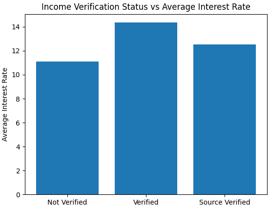
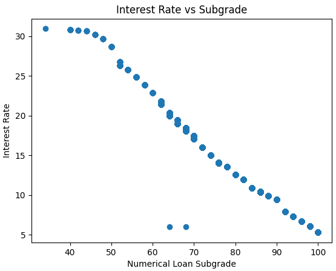
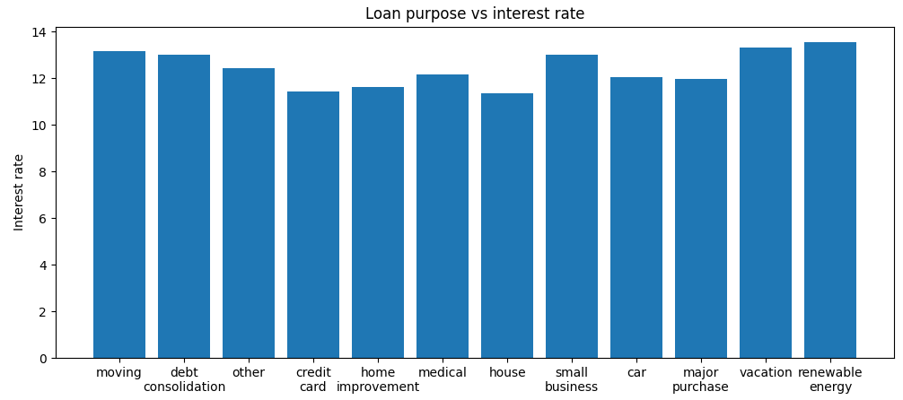
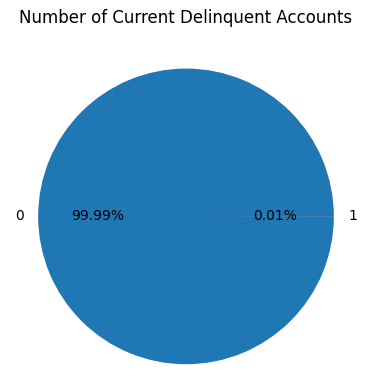
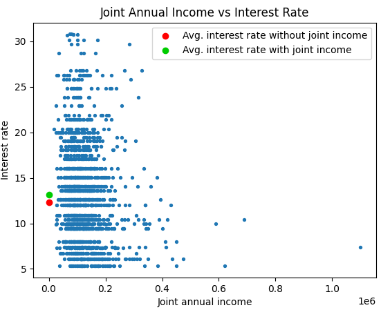

|

This is what most variables look like when compared to their average interest rates. When only taking one variable into account, the results don't look very meaningful, or even intuitively correct. In this case, why would people who didn't verify their income in any way get lower interest rates than those who did? Clearly, these results only make sense in the context of the larger data set. |

When it comes to machine learning, there may be variables that the algorithm shouldn't be allowed to work with. The variable sub_grade, as seen here, is one of those variables. Aside from the two outliers, every subgrade correlates near perfectly with an interest rate. When you realize that subgrades are essentially the results of Lending Club's own algorithm for determining interest rates, it makes even more sense to remove sub_grade from our feature set. |
|---|---|
|

This is similar to the first graph, but with values that make a bit more sense. As one can tell from the graph, loans with purposes such as debt consolidation and vacationing have some of the highest average interest rates, while ones such as car and house payments have some of the lowest. One can intuit that more frivolous loans tend to get higher interest rates, which makes sense unlike the first graph. When it comes to machine learning, these are the kinds of relationships that we hope the algorithm picks up on. |
|
|

Good machine learning algorithms tend to take a while to create, so removing relatively useless data can be very useful in the interest of time. As one can see from the graph, only one loan out of the ten thousand in the data set has a current delinquent account. Furthermore, digging into the data set shows that this one person's interest rate is about the same as any similar person with 0 delinquent accounts. When it comes to variables that provide almost no information like this, one should generally remove it from the feature set for efficiency's sake. |

Joint Annual Income is an example of a variable that could potentially be more trouble to properly implement in a machine learning algorithm than it's worth. Only about 15 percent of loans have joint incomes at all, and the data we get from the variable isn't even that great. One can tell from the graph that there's a very weak inverse relationship between joint annual income and interest rates, but is that enough of a relationship when the difference between average interest rates for joint income applications is so small? In the end, the issue of whether or not to keep variables like this in the feature set lies with the algorithm creator. |